Top Bar Features#
The top bar includes various features that support use of the WebUI.
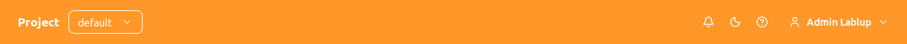
Project selector#
Users can switch between projects using the project selector provided in the top bar. By default, the project that the user currently belongs to is selected. Since each project may have different resource policies, switching projects may also change the available resource policies.
The selector lists the projects you can access. If you open an address that names a project which does not exist or which you cannot access, the project selector shows no selection and the page explains what happened instead of silently switching you to another project.
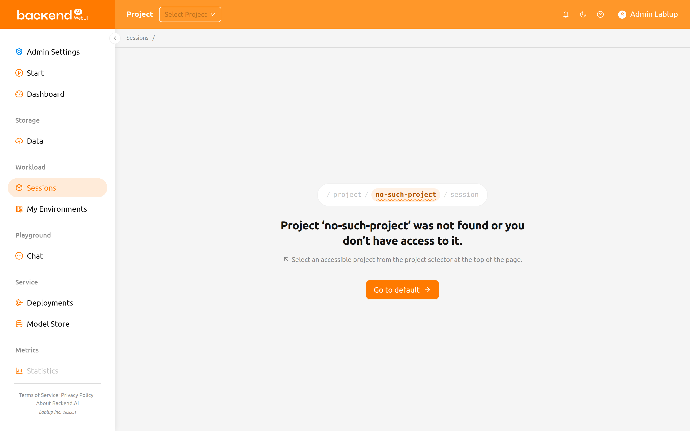
- The message reads
Project ‘<name>’ was not found or you don’t have access to it. - Below it, a hint asks you to select an accessible project from the project selector at the top of the page.
- A
Go to <project>button takes you to a project you can access.
If you do not belong to any project, the page shows
No accessible projects. together with
Ask your administrator to grant you access to a project.
The project selector is not shown on the administration pages under
Admin Settings (addresses starting with /admin/). Those pages work across
all projects instead of within one, so the top bar hides the selector while you
are on them. Your selection is left untouched — when you leave an administration
page, the project you had selected before is still selected. Where an
administration page does need a project, the page or its dialog asks for one
explicitly: for example, the folder creation dialog on the administration Data
page has a Target Project field, and the image install dialog has an
Install Session Project field.
Login session timer#
When login session management is enabled, the top bar displays the remaining
time until automatic logout along with an extend button. The timer shows the
time in HH:mm:ss format (or includes a day count if longer than 24 hours).
Click the extend button (repeat icon) next to the timer to reset the session expiration and extend your login session.
The login session timer is only visible when the server supports login session extension and it has been enabled in the system configuration.
Search#
The magnifier button opens the search palette, which lets you jump to any page, page tab, or setting item without leaving the keyboard.
The search palette is an experimental feature and is turned off by default. The Search button appears in the top bar, and its shortcut works, only while the Command palette item under Experimental features on the User Settings page is enabled.
Click the button, or press Ctrl-K (Cmd-K on macOS), to open the palette. The
shortcut works even while the cursor is in an input field.
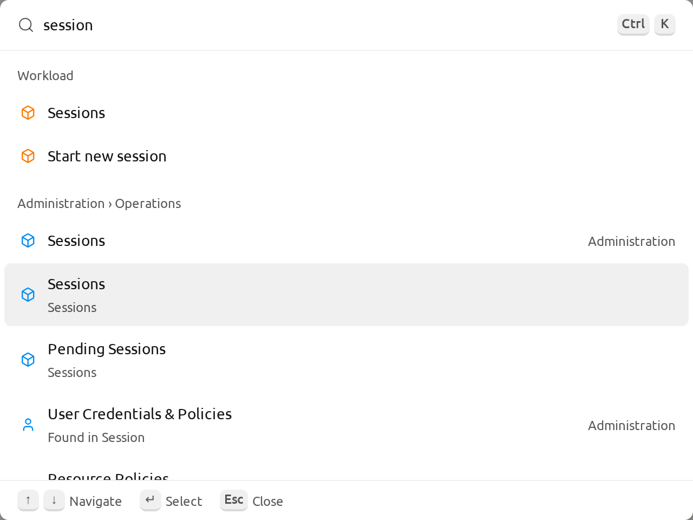
Type in the search field, whose placeholder reads Search pages, tabs, and settings, to look up pages, page tabs, and setting items at once. A result that
matched the description of an item rather than its name shows a Found in ...
line naming where the word was found, and a result that belongs to the
administration menus carries an Administration or Project administration
tag. When nothing matches what you typed, No results is shown.
The palette also offers quick actions in three groups.
Create: Start a new session, create a storage folder, or create a deployment.Appearance: Switch to dark or light mode, use the system theme, or change the UI language.Panels & help: Open user settings, open notifications, toggle the sidebar, or open the manual for the current page.
Before you type anything, the results you opened most recently are listed at the
top under Recent.
Notification#
The bell shape button is the event notification button.
Events that need to be recorded during WebUI operation are displayed here.
When background tasks are running, such as creating a compute session,
you can check the jobs here.
Press the shortcut key (]) to open and close the notification area.
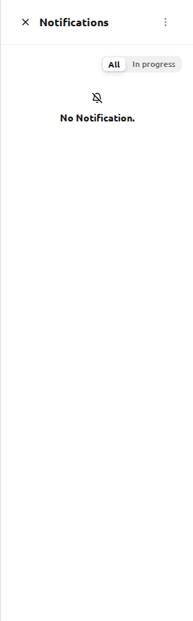
Display mode#
You can change the display mode of the WebUI via the light/dark mode button.
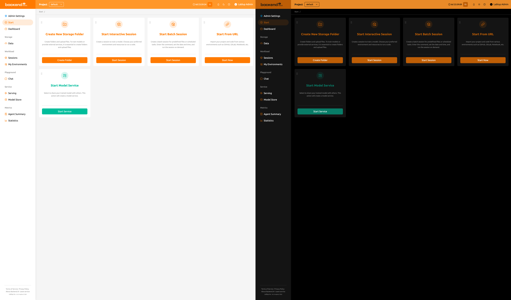
Help#
Click the question mark button to access the web version of this guide document. The link is built to match the WebUI you are using.
Responsive layout#
On smaller screens, the top bar adjusts its layout for better usability. When the screen width is narrow, the sidebar toggle is replaced with a menu icon button in the top bar. The user's display name may also be hidden, showing only the avatar icon for the user menu. The project label text is hidden on very small screens.
User menu#
Click the user icon on the right side of the top bar to see the user menu.
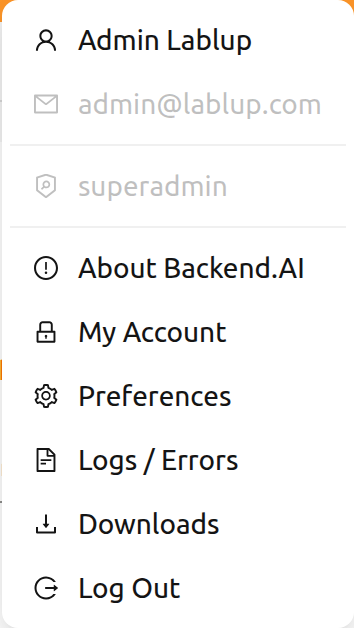
At the top of the dropdown, the following user information is displayed for reference. These items are not clickable.
- Full name: The current user's full name.
- Email: The current user's email address.
- Role: The current user's role (e.g., user, superadmin).
Below the user information, the following action items are available.
About Backend.AI: Displays information such as the version of Backend.AI WebUI, license type, etc.My Account: Check and update information of the current logged-in user.Preferences: Open the User Settings dialog over the current page. It has a Logs category where you can check the log and error history recorded on the client side.Downloads: Open the Downloads dialog, where you can get the stand-alone WebUI desktop app and the Backend.AI command-line interface (CLI). This option is only visible when the administrator has enabled at least one of the two.Log Out: Log out of the WebUI.
My account#
If you click My Account, the My Account Information dialog appears.
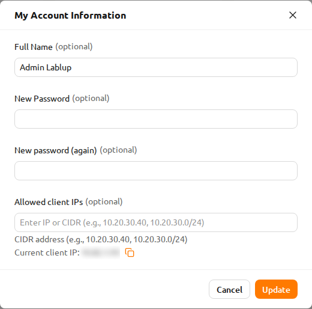
Each item has the following meaning. Enter the desired value and click the
Update button to update your information.
- Full Name: User's name (up to 64 characters).
- New password: New password (8 characters or more containing at least 1 alphabet, number, and symbol). Click the eye icon to reveal the input.
- New password (again): Re-enter the new password for confirmation.
- Allowed client IPs: Restrict login access to specific IP addresses or CIDR
ranges. Enter one or more IP addresses or CIDR notations (e.g.,
10.20.30.40,10.20.30.0/24). Below the field, your current client IP address is displayed with a copy button for convenience. If the configured list does not include your current IP, a warning is shown. - 2FA Enabled: Enable or disable two-factor authentication. When enabled, you must enter an OTP code at login.
Depending on the plugin settings, the 2FA Enabled field might not be visible.
In that case, please contact the administrator of your system.
2FA setup#
If you activate the 2FA Enabled switch, the following dialog appears.
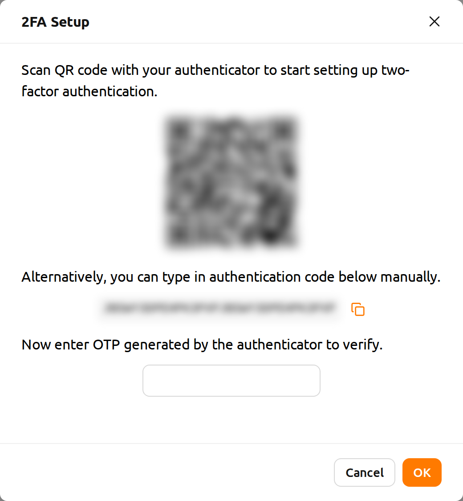
Turn on the 2FA application you use and scan the QR code or manually enter the verification code. There are many 2FA-enabled applications, such as Google Authenticator, 2STP, 1Password, and Bitwarden.
Then enter the 6-digit code from the item added to your 2FA application into the dialog above.
2FA is activated when you press the OK button.
When you log in later, if you enter an email and password, an additional field appears asking for the OTP code.

To log in, you must open the 2FA application and enter a 6-digit code in the One-time password field.
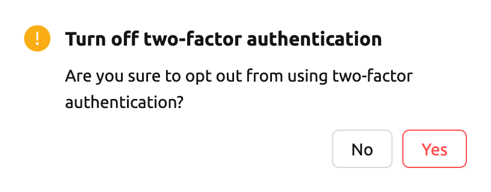
If you want to disable 2FA, turn off the 2FA Enabled switch and click the confirm button in the
following dialog.
Downloads#
Selecting Downloads opens a dialog with one tab for each download the
administrator has enabled: Desktop App and CLI.
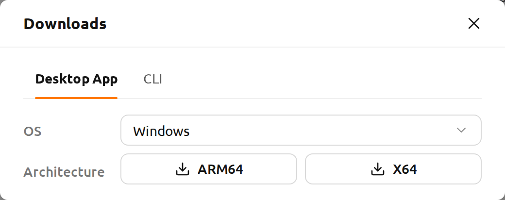
On the Desktop App tab, select your operating system in the OS field, then
click the button for your CPU architecture to start the download. The
stand-alone app gives you the same WebUI outside a browser.
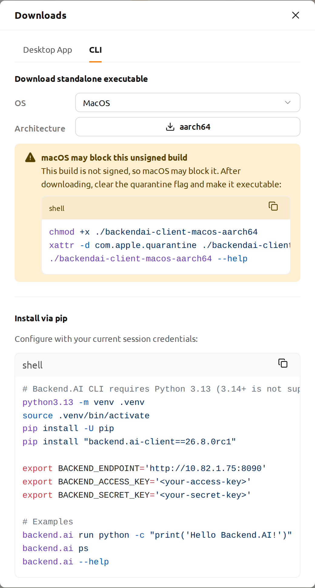
The CLI tab offers two ways to start using the command-line client:
- Download standalone executable: Select your operating system, then click
the button for your CPU architecture. Linux and macOS builds are offered.
After downloading, run the commands shown below the buttons to make the file
executable and, optionally, install it as
backend.aion yourPATH. On macOS, the dialog instead shows how to clear the quarantine flag first, because the build is not signed yet. - Install via pip: A ready-to-run snippet that creates a Python virtual environment, installs the client version matching the server you are connected to, and sets the environment variables the client needs. Use the copy button at the top right of the snippet to copy the whole block.
The snippet fills in the endpoint of your current session, but never your
credentials. Replace <your-access-key> and <your-secret-key> with your own
keypair before running it. The snippet also pins Python 3.13, which the client
requires.